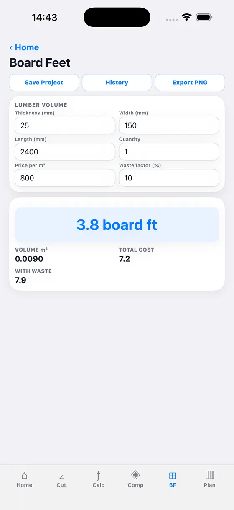
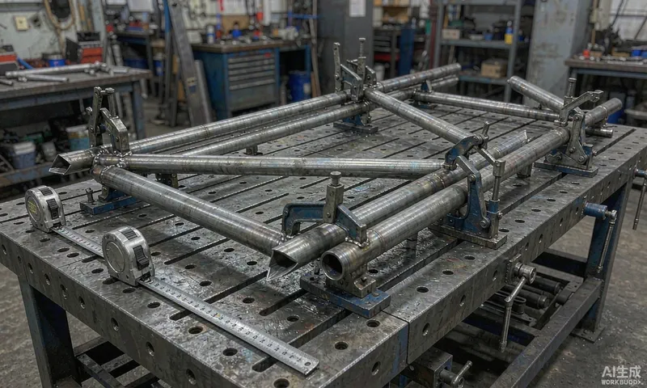

図面は 40°。ソーは 50°。どちらも正しい。
図面はある角度を示し、機械のスケールは別の角度を示します。その間には、刃が下りる前に、手袋をしたまま頭の中で計算する 90 − 40 = 50 があります。Tube Miter Calculator はその変換を代わりに行い、角度・余角・補角 を並べて表示 — 長辺/短辺/中央のエッジ長と、目の前の機械に合わせて回転できる寸法入り図面を添えて。
ワークショップ、鉄骨建方、手すり・ロールケージ製作、大工・建具職人、DIY 改装者向け — 加えて日常の計算（複合カット、ボードフィート、切り出し計画）も。完全オフライン、メートル法/ヤードポンド法対応。


図面の角度は、ソーに書かれた数字ではありません
どの職種でもぶつかる問題です：計画や見取り図や配管レイアウトはある向きで測った角度を示し、目の前のマイターソー、コールドソー、チョップソー、バンドソーのテーブル、マイターゲージは逆の向きで目盛りが振られています。直角カット基準の読み取り、フェンス基準の読み取り、鈍角の読み取り。頭の中で換算する — そして 2 つの数字がほぼ置き換え可能に見えるとき、その換算こそが部材をダメにする場所です。
🏗 ワークショップと鉄骨作業班
手すり、欄間、ビニールハウス骨組み、現場フェンス。断面図は挟角を示し、機械は別の値を求めます。一悶着あって、誰かが埃だらけの携帯キーパッドで 90 − 47.5 を計算するのです。
🔧 製作とモータースポーツ
ロールケージ、シャーシのノード、エキゾースト。各ノードには 2 つの異なるカット角度があり、それぞれに余角も必要 — 1 つのノードがノッチを入れる前に管理すべき 4 つの数字になります。
🪚 大工・建具職人・DIY
斜めの枠、台形の箱、額縁、コーナンの返し、巾木の返し。ゲージによって直角基準とフェンス基準があり、作業中の 90° の切り替えが高価な硬木を端材に変えてしまいます。
40°と50°が危険なペアである理由
40°と50°は余角の関係（合計 90°）なので、同じ継手の隣ではどちらももっともらしく見えます — しかも差は 10° だけ。組立の両端が切られているため、この誤差の 2 倍が継手に現れます。
暗算の最悪ゾーンはここです：
- 45° ↔ 45° — 反転しても見た目が変わらず、誰も気づきません。
- 30° ↔ 60° — 差が大きいので、間違いはたいてい目で見てわかります。
- 40° ↔ 50°、35° ↔ 55°、47.5° ↔ 42.5° — 置き換え可能に見えるほど近く、部材を廃棄するほど違う。エラーが実際に起きるのはここです。
しかも 90° だけではありません：図面作業によっては補角の読み取りも使うため、180 − a もリストに加わります。もっともらしい数字 3 つ、正しい設定 1 つ、パイプは 1 本。


入力 1 つで得られるもの、例 a = 40°
| 読み取り | 意味 | 必要なとき | a = 40° |
|---|---|---|---|
| マイター角 a | 直角カットからの偏角（直角カットは 0°） | 直角カット基準で目盛られたスケール・ゲージ | 40° |
| 余角 90 − a | 同じカットの逆読み | 90° が直角を意味するスケール、フェンス基準の読み取り | 50° |
| 補角 180 − a | 同じ線の鈍角側の値 | 図面作業、分度器、挟角の読み取り | 140° |
どの数字を機械に入れるかはあなたが選びます — 重要なのは、刃が回っている作業の最中にそれを 導き出す 必要がなくなったことです。
主な特長
6 つのカット幾何形状と 5 つのワークショップ電卓。すべてオフラインで一瞬で計算します。
∠ 6 つのカット幾何形状
直角/マイター、平行マイター、対向マイター、ポイント/ポイント、ポイント/Vノッチ、Vノッチ/Vノッチ。各プリセットは現実的なデフォルトを読み込むので、変えるのは 1 つの数字だけ。
📏 90 − a を手計算しない
すべてのカットに対して、角度と 余角（90 − a） と 補角（180 − a） が、長辺/短辺/中央のエッジ長とともにまとめて表示されます — ソーが直角で 0° を読むか 90° を読むか、どのスケールにも対応します。
🖼 寸法付きライブビュー
寸法矢印付きのフルスクリーン実寸断面図。90° / 180° 回転、垂直反転、元の角度＋余角／元の角度＋補角ラベルの切り替えで、作業台の部材に合わせられます。
◈ 複合カット
台形の箱・ピラミッド・斜め枠のためのマイター角と刃の傾き。辺の数、側面の傾斜、パネルの高さと厚みを入力 — ソーの設定、斜高、エッジのオフセットを得られます。
⊞ ボードフィートと費用
厚み・幅・長さから材積を計算し、数量・ボードフィート単価・任意の歩留まり係数付き。メートル法/ヤードポンド法対応。
▥ 在庫オプティマイザー
材料の長さ、ノコギリ代、端の切り代と必要なピース数を入力 — 実用的な切り出し計画を組み、残りを教えてくれます。
ƒ ワークショップ電卓
角度指定の三角関数（sin、cos、tan と逆関数）を備えた専用キーパッドで、結果をワンタップでコピー — 手袋をしたまま標準の iOS 電卓と格闘する必要はありません。
💾 プロジェクトと PNG レポート
入力をプロジェクト名付きで履歴に保存し、次の作業で再読み込み。PNG レポートを写真アプリや iOS の共有シートに書き出せます。
🔒 オフライン・プライベート
インターネットなし、サインインなし、解析なし。単位（mm / in）、画面常時点灯、リセットだけが設定項目 — 他のすべては端末内で完結します。
動作の様子を見る
iPhone 17 Pro Max の実画面録画から切り出した 4 つの短いループ — アプリはスクリプト化したウォークスルーで操作されており、画面上のすべてのタップ・キー入力・再計算は本物です。ミュート自動再生、字幕付き。
カット幾何形状の切り替え
6 つのプリセットを順にタップ — 図面とすべての長さがその場で更新されます。
ライブビュー：回転・反転・ラベル切替
フルビューを開き、90° 回転、垂直反転、角度ラベルを切り替えます。
ワークショップ電卓
40 + 50 = 90、次いで内蔵キーパッドで sin(40°) — 結果をワンタップでコピー。
その他のワークショップモジュール
20° の六角形複合カット、12 枚の木材注文、そして最適化 — 各モジュールは入力しながら計算します。
使い方
作業台の継手からソーに入れる数字までの 4 ステップ。
ステップバイステップチュートリアル
アプリの全画面を、実際に使う順序で。





実際の活用シーン
マイター計算が真に役立つ場面。

手すりと欄干
手すりを正確な勾配角で柱に当てるようにカット、または魚口のサドルを加工してパイプを柱にきれいに巻き付けます。ライブビューを回転して、階段の上で持つ通りの継手を確認できます。

ロールケージ・シャーシ・フレーム
ノードの多い管構造はポイントカットと Vノッチが中心です。継手角度を一度設定すれば長辺/短辺/中央の長さが得られ、そのノードのすべてのパイプを同じ数字で切れます。

現場での組立、電波なし
遠隔地、海上コンテナ、地下機械室には電波がありません。アプリのすべては端末内で動くので、必要なときに必ず計算できます。
よくある質問
図面は 40°、ソーの読みは 50°。どちらが正しい？
両方とも同じカットを表しています — 余角の関係（合計 90°）だからです。マイター角 a は直角カットから測り、90 − a は同じ線を逆方向から読んだ値です。まさに 40/50 が人を惑わせる理由で、2 つの数字は置き換え可能に見えるのに、間違えると端ごとに 10°、継手で 20° の誤差になります。アプリは両方の読み取りを並べて表示するので、現場で 2 つ目を導く必要はありません。
ソーでは角度と余角のどちらを設定する？
機械のスケールの目盛り方によります。0° が直角ならマイター角 a を、90° が直角（フェンス基準の目盛り）なら 90 − a を設定します。分度器や図面作業では鈍角の 180 − a を使うこともあります。ライブビューの「元の角度＋余角／元の角度＋補角」ボタンで、スケールの印刷に合わせて図面をラベル表示し、必ず端材で試してから本番に移ってください。
マイター角はどのように定義されますか？
マイター角は直角カットから測定されるため、直角カットは 0° です。ライブビューでは余角（90° − 角度）や補角の値も表示され、ソーに印刷されたスケールに合わせられます。
ポイントカットと Vノッチカットの違いは？
ポイントカットはパイプの端を 1 点に尖らせるカットで、パイプ同士が角度をなして交わるときに使います。Vノッチ（魚口）カットは V 字形のサドルを削り取ることで、パイプが丸い柱や別のパイプに巻き付くようにします — 手すり、T 継手、ロールケージの定番継手です。アプリは両方、そしてポイント/Vノッチの組み合わせにも対応します。
ミリメートルとインチを切り替えるには？
ホーム画面の歯車アイコンをタップしてメートル法またはヤードポンド法を選びます。既存の値は自動変換され、選択は記憶されます。
レポートを写真に保存できないのはなぜ？
アプリには「写真の追加のみ」権限が必要です。iOS 設定 → プライバシーとセキュリティ → 写真 → Tube Miter Calculator で有効にしてください。代わりに共有オプションもいつでも使えます。
インターネット接続は必要ですか？
いいえ。すべての計算と保存したプロジェクトは端末内に残ります。アカウントも解析もトラッキングもありません — プライバシーポリシー をご覧ください。
作業を保存して後で戻れますか？
はい。入力をプロジェクト名を付けて履歴に保存し、後で再読み込みできます — モジュールごと（カット、複合、ボードフィート、在庫）に個別保存。不要な項目は同じパネルから削除できます。
iPad で使えますか？
はい。iPad ではより広いレイアウトになるユニバーサルアプリで、画面方向にも完全対応しています。
結果の精度はどのくらい？
計算自体は理想形状に対して正確です。実際の精度は、実測直径、壁厚、継手角度、ノコギリ代といった入力が材料とどれだけ一致するかに依存します。量産の前に必ず 1 本試し切りしてフィットを確認してください。
サポートへの連絡方法は？
wangning.engineer@outlook.com までメールしてください。返信は通常 24〜48 時間以内です。
安全上の注意
結果はセットアップ補助です。各ロットの前に：スケールの目盛りの向き（直角で 0° か 90° か）を確認し、端の識別、表/裏面、なまくら側、廃材側、ノコギリ代を確認して、1 本試し切りでチェックしてください。特に 40° / 50° のようなほぼ対称なペアでは、試し切りは 1 分、間違えばパイプが 1 本失われます。目と耳の保護具を着用し、機械の取扱説明書に従ってください。
アプリを入手
Tube Miter Calculator は iPhone・iPad 向けに App Store で配信中です。